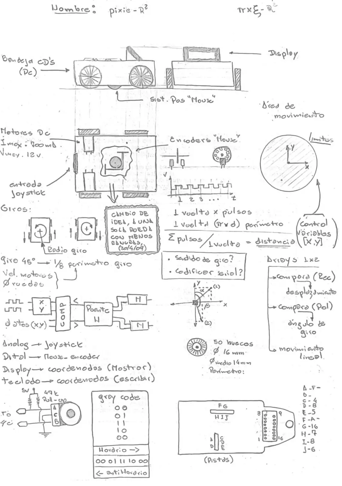
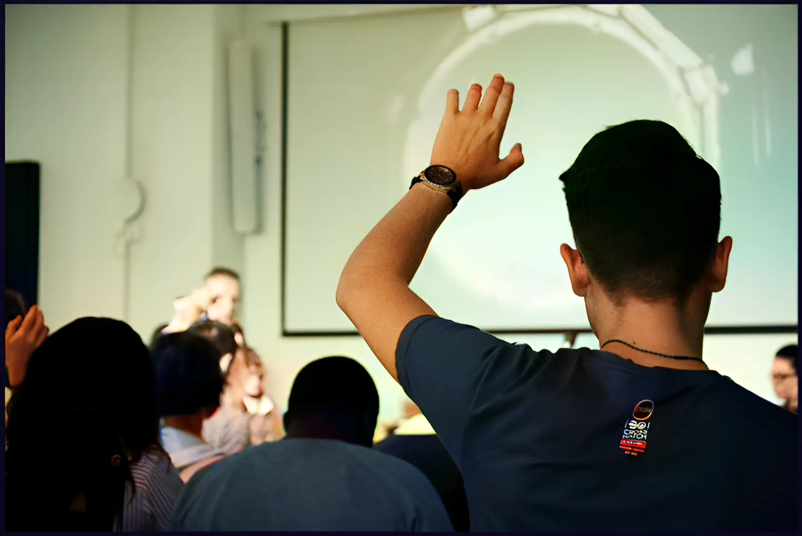

// FORMACIÓN Y DESARROLLO
Robot autónomo
Una primera implementación sobre un microcontrolador funcionando con una pequeña máquina inteligente, la cual reconoce su ubicación y se desplaza hasta llegar al nuevo punto.
30 de diciembre de 2009 · 1 minuto de lectura

Todos estos movimientos los realiza por coordinadas. Genera una grilla del espacio en donde se encuentra y obtiene el camino rectangular por el cual se desplaza. Una pequeña aplicación sin grandes precedentes, pero no deja de ser válido su desarrollo. Sobre IA y aplicaciones de máquinas pensantes hay mucho por delante, por algún lado había que empezar a entender cómo funciona la mentalidad de las máquinas.
Para más detalles puedes leer el paper final del proyecto:
Estudios relacionados
17% Ingeniero electrónico
Todo proyecto se comienza desde las bases, de modo que permitan seguir adelante confiando en lo ya realizado.
Diciembre 2008
Estudios universitarios
En un momento u otro había que tomar la decisión. Fácil o difícil, que más da. Es lo que me gusta y veremos cómo es el trámite.
Marzo 2008
Brazo robótico
Como un anticipo de lo que se estaba por venir, este trabajo forma parte del cierre de una etapa y la apertura de otra, que promete más esfuerzos y satisfacciones.
Noviembre 200717% Ingeniero electrónico
// EL SIGUIENTE PASO
TU PRODUCTO.
SU PRÓXIMA ETAPA.
Una primera conversación para entender el desafío y ver si puedo aportar valor.
↗ Hablemos de tu proyecto